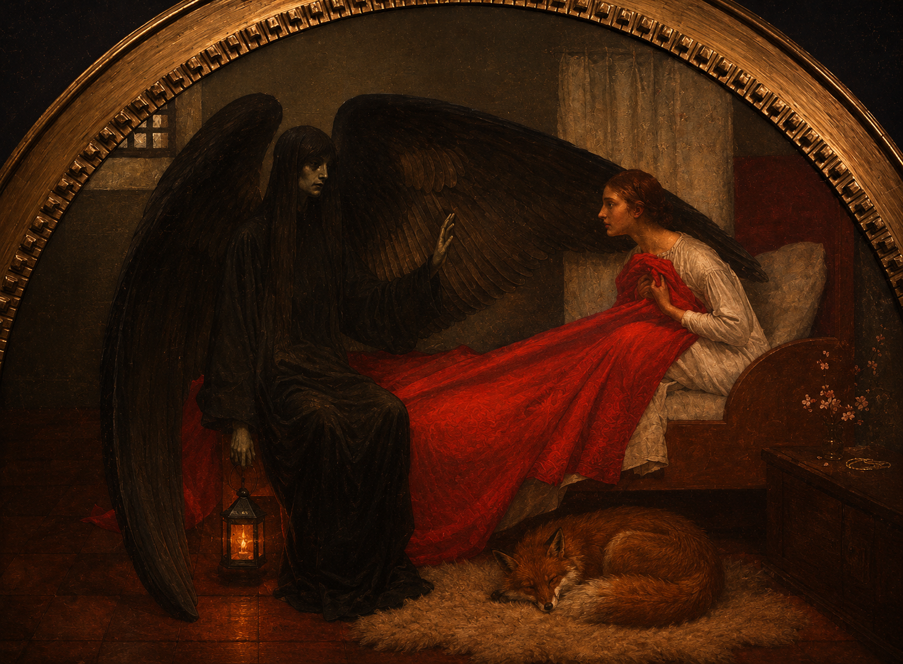

A
la jeune fille et la mort - marianne stokes - 1908
dans ce tableau on voit une jeune femme asisse dans son lit face a la mort representer par une figure ailée vetue de noir la jeune fille semble surprise et inquiete les couleurs rouge blanc et noir creent un fort contraste l'oeuvre symobolise la rencontre entre la jeunesse et la mort

la visite de minuit est une reinterpretation de la jeune fille et la mort la composition accentue la tension dramatique le cadrage isole la jeune fille au centre de la scene creeant un atmposphere vulnerable face a la silhouette
Date de création de l'œuvre : 1908 1937 Technique : Peinture à l'huile sur toile Dimensions : 95 x 135 cm ( 3,5 x 8 m) Son lieu de conservation /d'exposition : musee d'orsay paris france .